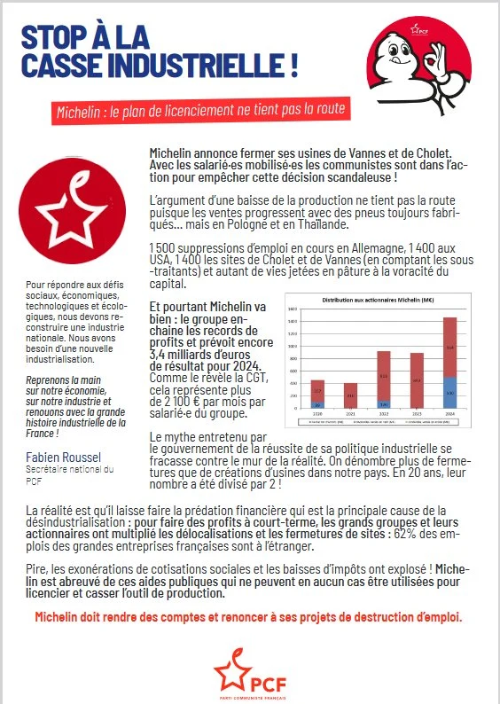
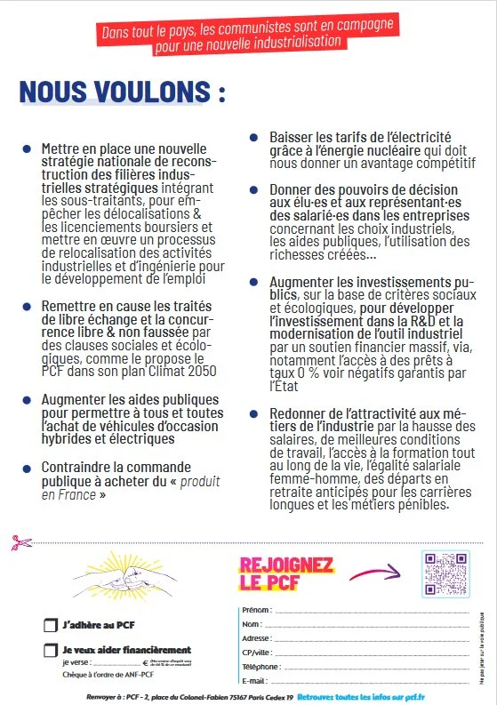

Prise de position
Michelin. Notre soutien aux salariés menacés par les fermetures
Date indiquée par Facebook · 7 novembre 2024
Repères éditoriaux
Nous avons demandé à Michelin de rendre des comptes et de renoncer aux suppressions d’emplois. Le tract reprend nos propositions pour défendre l’emploi et l’avenir industriel.
Texte conservé avec la publication
Michelin doit rendre des comptes et renoncer à ses projets de destruction d'emplois !


Sources
Archive rouge · export Facebook · AR-0002-FB-01248
À lire aussi · Michelin à Cholet. La manifestation du 12 décembre en vidéo